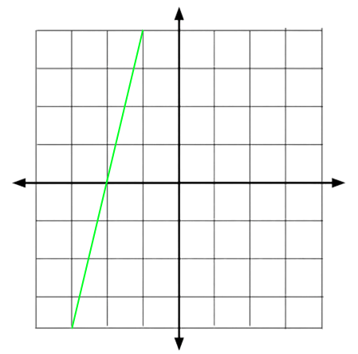

2x + 3 = -5
A linear equation can also be a linear function which is shown as a straight line on a graph like this one...  A linear function can be expressed in many forms like slope-intercept form...y = mx + b
y = 3x + 2
Or in point-slope form...y - y1 = m(x - xx)
y - 5 = 2(x - 2)
y - 5 = 2x - 4
y = 2x + 1
Or in Standard Form...Ax + By = C
5x + 4y = 3
-4y = 5x + 3
-y = -5/4x + 0.75
y = 5/4x - 3/4
There are many forms of linear functions but all of them equate the same.y = mx + b
This form of linear functions shows the slope and as m the y-intercept as b. So for example...y = -2x + 5
In this example, the slope is -2, meaning that every time x increases by 1, y decreases by 2. And the y-intercept is 5, meaning that when x = 0, y = 5.y = 1/3x - 5
We can use (0, -5) for example as the y-intercept is 5. Then we can plug in these coordinates into the point-slope form itself...y - y1 = m(x - x1)
y - (-5) = m(x - 0)
Lastly, we'll substitute m as the slope of the function (which is 1/3)...y + 5 = 1/3(x - 0)
y + 5 = 1/3x
y = 3/2x - 2
Move 3/2x to the left by subtracting it on both sides...-3/2x + y = -2
This is the standard form for y = 3/2x - 2, optionally, you can multiply -2 on both sides and or add 2 on both sides...Multiplying -2 on both sides
3x - 2y = 4
Add 2 on both sides
-3/2x + y + 2 = 0
Doing both
3x - 2y - 4 = 0
y - y1 = m(x - x1)
Like this one for example...y - 5 = 2(x - 1)
Which can be simplified to...y - 5 = 2x - 2
y - 3 = 2x
The m represents the slope of the line, so the slope of this line is 2. The x1 and y1 are the coordinates of a point that lies on the line so for example for this linear function, (1, 5) lies on the line which can then be used for the values of both values, x1 = 1, y1 = 5...y - y1 = -1(x - x1)
Lets say that (-2, 5) lies on the line, so we would plug in those values into the equation...y - 5 = -1(x + 2)
Then simplify...y - 5 = -x - 2
y - 3 = -x
Now lets add 3 on both sides to remove the -3 on the left...y = -x + 3
So y - 5 = -1(x + 2) is y = -x + 3 in slope-intercept form.y + 2 = 4(-2x - 1)
To start, lets simplify the equation...y + 2 = -8x - 4
Now lets add 8x on both sides to remove the -8x on the right...8x + y + 2 = -4
Now we've converted this into Standard Form and we can even convert it to the general form Ax + By + C = 08x + y + 6 = 0
Ax + By + C = 0
Here are some examples...-3x + 2y + 2 = 0
2x - y - 5 = 0
5x + 7y - 1 = 0
x + 3y + 3 = 0
30x + 10y - 20 = 0
Lets move 10y on the left...-10y = 30x - 20
Now lets simplify the equation.y = -3x + 2
So 30x + 10y - 20 = 0 in standard form is y = -3x + 2 in slope-intercept form.12x + 3y = 9
Lets convert this to slope-intercept form...12x + 3y - 9 = 0
-3y = 12x - 9
y = -4x + 3
Now that we've converted it to slope-intercept, we can now convert it to point-slope form. From this we can see that the y-intercept is 3, so we can use (0, 3) as the point for the point-slope form...y - 3 = m(x - 0)
We can also see that the slope is -4, so we can plug that in as well...y - 3 = -4(x - 0)
So this is the linear function in point-slope form, but we can simplify it even further...y - 3 = -4x